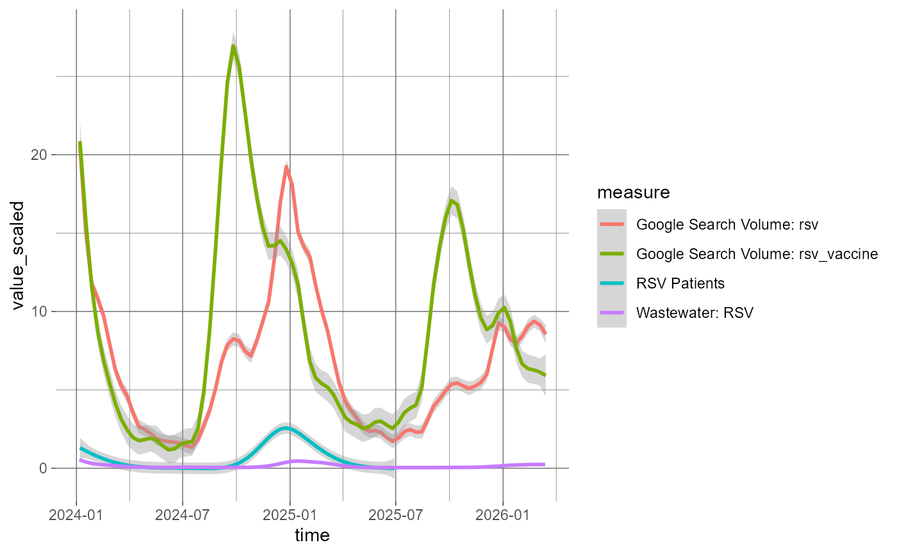

Load the standard or distribution data from a local or remote data collection project.
Usage
dcf_data(
variables = NULL,
project = ".",
data_format = NULL,
project_type = "bundle",
...,
unify = TRUE,
only_selected = FALSE,
cache = tempdir(),
refresh = FALSE,
verbose = TRUE
)Arguments
- variables
A character vector of variable names to be loaded, or a selected subset of a project data dictionary, as returned from
dcf_variables.- project
Path to a local project, or the GitHub account and repository name (
"{account_name}/{repo_name}") of a remote project.- data_format
The data format to select, between
tallandwide. Useful if there are duplicate measure names between files of different formats.- project_type
Project type to select, between
bundleandsource.- ...
Additional arguments passed to
dcf_report.- unify
Logical; if
FALSE, will returndataas a list with entries for each file. Otherwise (by default), will attempt to combine the loaded data.- only_selected
Logical; if
TRUE, will drop columns that were not included invariables, other than ID columns.- cache
Path to a directory in which to store downloaded files. Within this directory, the repository structure will be recreated within an account-named directory.
- refresh
Logical; if
TURE, will download files even if they exist in thecache.- verbose
Logical; if
FALSE, will not show status messages.
Value
A list with entries for metadata (the datapackage resource entry for each file loaded) and data (a tibble or list of tibbles of the unified or separately loaded files).
See also
Other data user interface functions:
dcf_report(),
dcf_variables()
Examples
# retrieve the full bundle file that includes the `epic_rsv` measure
bundle <- dcf_data(
"epic_rsv",
"dissc-yale/pophive_demo",
data_format = "tall",
verbose = FALSE
)
bundle$data
#> # A tibble: 55,889 × 6
#> # Groups: measure [5]
#> geography time measure value value_scaled source_file
#> <chr> <date> <chr> <dbl> <dbl> <chr>
#> 1 0 2023-01-01 epic_all_encounters 854874 75.4 data/bundle_tal…
#> 2 0 2023-01-01 epic_rsv 2582 20.5 data/bundle_tal…
#> 3 0 2023-01-08 epic_all_encounters 804025 70.9 data/bundle_tal…
#> 4 0 2023-01-08 epic_rsv 1659 13.2 data/bundle_tal…
#> 5 0 2023-01-15 epic_all_encounters 808560 71.3 data/bundle_tal…
#> 6 0 2023-01-15 epic_rsv 1254 9.94 data/bundle_tal…
#> 7 0 2023-01-22 epic_all_encounters 806785 71.1 data/bundle_tal…
#> 8 0 2023-01-22 epic_rsv 1069 8.47 data/bundle_tal…
#> 9 0 2023-01-29 epic_all_encounters 801378 70.7 data/bundle_tal…
#> 10 0 2023-01-29 epic_rsv 852 6.74 data/bundle_tal…
#> # ℹ 55,879 more rows
if (require("ggplot2", quietly = TRUE)) {
# extract short names from metadata
labels <- vapply(
bundle$metadata[[1L]]$schema$fields[[3L]]$info$levels,
function(measure) measure$info$short_name,
""
)
# show trends from different measures over time
bundle$data |>
dplyr::filter(
time >= as.Date("2024-01-01"),
measure != "epic_all_encounters"
) |>
dplyr::mutate(measure = labels[measure]) |>
ggplot(aes(x = time, y = value_scaled, color = measure)) +
theme_dark() %+replace%
theme(panel.background = element_rect(fill = FALSE, color = FALSE)) +
geom_smooth(
method = "gam",
formula = y ~ s(x, bs = "cs", k = 50L)
)
}
